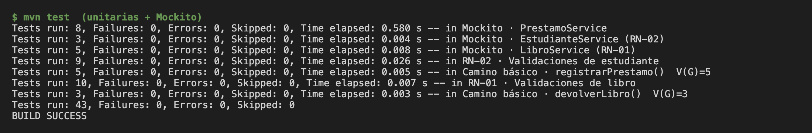
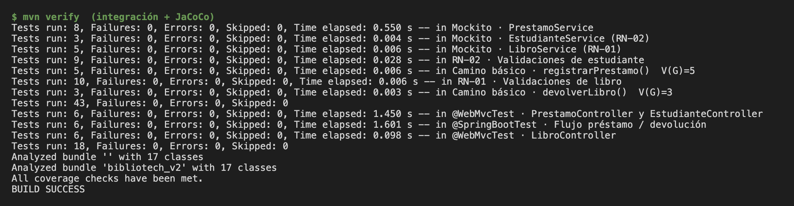
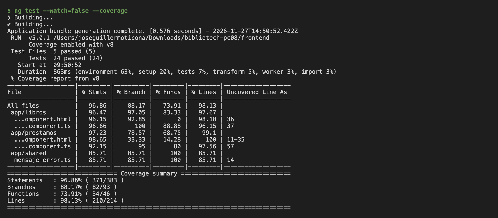
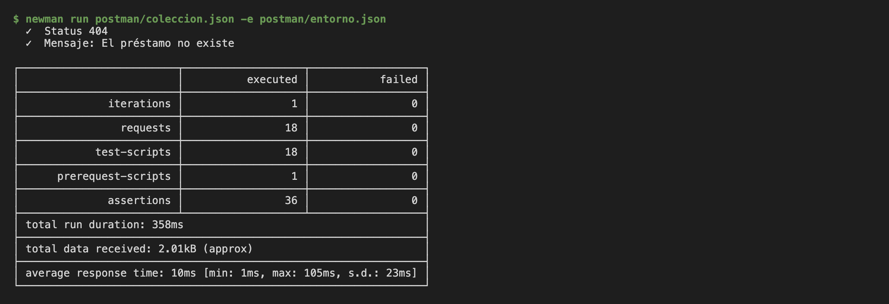
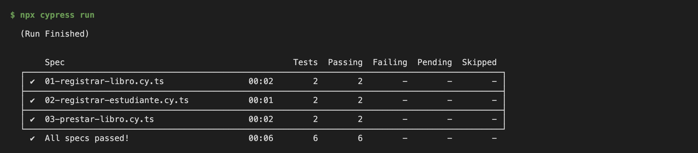
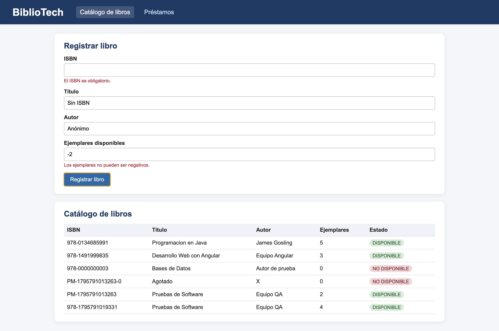
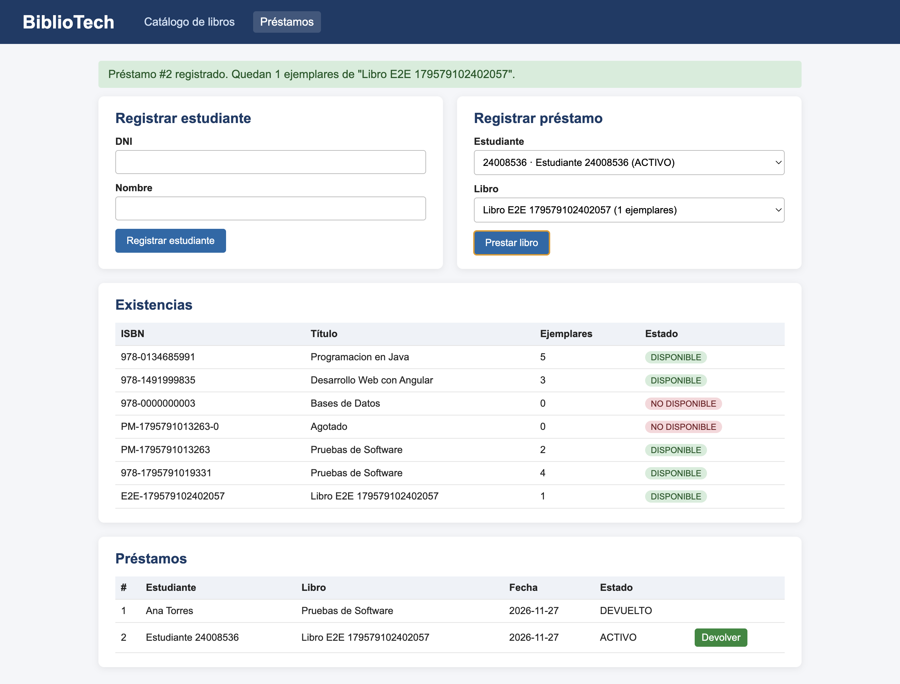
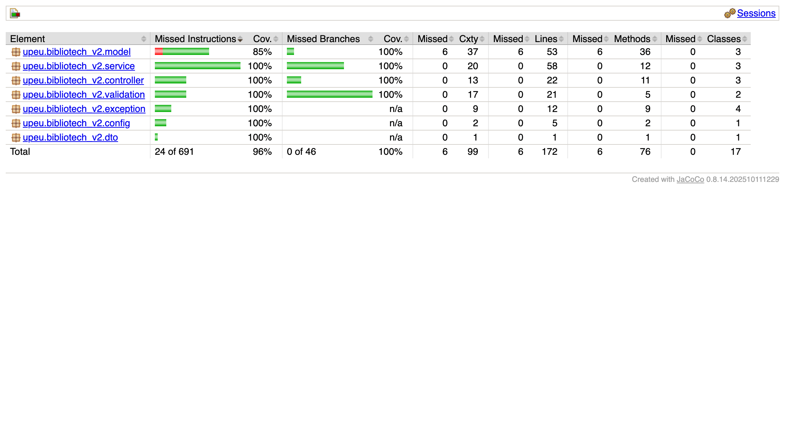
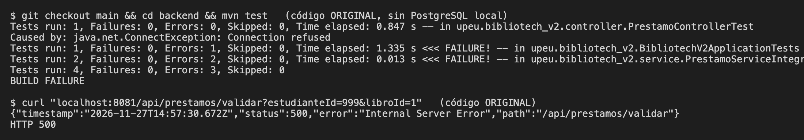

BiblioTech es una aplicación Spring Boot 4 (Java 21) + Angular 22 + PostgreSQL. Sobre el proyecto base de la Sesión 1 se agregaron las columnas libros.isbn y estudiantes.dni (obligatorias y únicas), el estado calculado del libro (ejemplares > 0 = DISPONIBLE; = 0 = NO DISPONIBLE), las reglas RN-01 a RN-04, los endpoints de la sección 2.4 y las dos pantallas Angular (/libros y /prestamos).
| Endpoint | Regla | Respuestas |
|---|---|---|
| GET /api/libros · GET /api/libros/{id} | RN-01 | 200 · 404 |
| POST /api/libros | RN-01 | 201 · 400 dato inválido · 409 ISBN repetido |
| POST /api/estudiantes | RN-02 | 201 (estado ACTIVO) · 400 · 409 DNI repetido |
| POST /api/prestamos | RN-03 | 201 · 400 · 404 libro no existe · 409 regla incumplida |
| PUT /api/prestamos/{id}/devolucion | RN-04 | 200 · 404 préstamo no existe · 409 ya devuelto |
Total: 109 pruebas automatizadas + 36 aserciones de API
| Nivel | Cant. | Mín. | Por qué en este nivel |
|---|---|---|---|
| Unitarias RN-01/02 | 19 | 5 | Reglas puras, milisegundos, sin BD: aquí se prueban todos los bordes. |
| Camino básico | 8 | 2 mét. | Un caso por camino independiente (5 + 3). |
| Mockito | 16 | 4 | Aísla PrestamoService de la BD y verifica interacciones. |
| @WebMvcTest | 12 | 2 | Contrato HTTP: códigos 200/201/400/404/409 y JSON. |
| @SpringBootTest | 6 | 2 | Flujo real con JPA + H2: stock, unicidad, devolución. |
| Angular | 24 | 4 | Validaciones del formulario y llamadas HTTP sin backend. |
| Newman | 18 | 8 | API real levantada, incluye casos de error. |
| Cypress | 6 | 2 | Solo los 3 flujos críticos de usuario: lentos y frágiles. |
Criterio: cuanto más abajo, más pruebas, más rápidas y más baratas de mantener. La lógica de negocio (validaciones, decisiones D1–D4) se agota en la base: 43 pruebas que corren en ~1 s sin Spring ni base de datos. La capa de integración solo confirma lo que la base no puede (mapeo HTTP, JPA, restricciones UNIQUE). Los niveles superiores (Newman y Cypress) repiten pocos escenarios representativos, porque necesitan la aplicación levantada y su fallo es más caro de diagnosticar. Datos controlados: el backend de prueba usa H2 en memoria y cada prueba de integración limpia y siembra sus datos; Newman y Cypress generan ISBN/DNI únicos por ejecución, por lo que se pueden repetir sin reiniciar la BD.
| Comando | Qué ejecuta |
|---|---|
mvn test | unitarias/ y mockito/ (Surefire; excluye integracion/) |
mvn verify | integracion/ (Failsafe) + reporte JaCoCo + regla que falla el build si líneas o ramas < 80 % |
npx ng test --watch=false | specs Angular con cobertura v8 (activada en angular.json) |
npx cypress run (carpeta e2e/) · newman run postman/coleccion.json | E2E y API con la aplicación levantada |
public Prestamo registrarPrestamo(Long estudianteId, Long libroId) {
Libro libro = libroRepository.findById(libroId).orElse(null); // N1
if (libro == null) // N1 · D1
throw new RecursoNoEncontradoException("El libro no existe"); // N2
if (libro.getEjemplaresDisponibles() <= 0) // N3 · D2
throw new ReglaNegocioException("...sin ejemplares disponibles"); // N4
Estudiante est = estudianteRepository.findById(estudianteId) // N5
.filter(Estudiante::esActivo).orElse(null);
if (est == null) // N5 · D3
throw new ReglaNegocioException("...no existe o no está ACTIVO"); // N6
long activos = prestamoRepository.countByEstudianteIdAndEstado(...); // N7
if (activos >= 3) // N7 · D4
throw new ReglaNegocioException("...ya tiene 3 préstamos activos"); // N8
libro.setEjemplaresDisponibles(libro.getEjemplaresDisponibles() - 1); // N9
libroRepository.save(libro);
return prestamoRepository.save(new Prestamo(est, libro, hoy, ACTIVO)); // N9→N10
}
Complejidad ciclomática: N = 10 nodos, E = 13 aristas.
V(G) = E − N + 2 = 13 − 10 + 2 = 5 · V(G) = P + 1 = 4 decisiones + 1 = 5 · 5 regiones.
Las decisiones se evalúan en el orden pedido (D1→D4). Que el estudiante no exista se agrupa en D3 (filter(esActivo)), por lo que el método tiene exactamente 4 nodos predicado.
Azul: nodo predicado · rojo: rechazo · verde: préstamo
| Camino | Recorrido | Datos de entrada (mocks) | Resultado esperado | Caso JUnit | |
|---|---|---|---|---|---|
| C1 | 1→2→10 | libro 99 no existe | 404 «El libro no existe» | c1_libroNoExiste | ✔ |
| C2 | 1→3→4→10 | libro con 0 ejemplares | 409 sin ejemplares | c2_sinEjemplares | ✔ |
| C3 | 1→3→5→6→10 | libro 2 ej.; estudiante INACTIVO | 409 estudiante no ACTIVO | c3_estudianteInactivo | ✔ |
| C4 | 1→3→5→7→8→10 | estudiante ACTIVO con 3 activos | 409 límite de 3 | c4_limiteDePrestamos | ✔ |
| C5 | 1→3→5→7→9→10 | libro 2 ej.; ACTIVO con 2 activos | préstamo ACTIVO; quedan 1 | c5_prestamoExitoso | ✔ |
public Prestamo devolverLibro(Long prestamoId) {
Prestamo p = prestamoRepository.findById(prestamoId).orElse(null); // N1
if (p == null) // N1 · D1
throw new RecursoNoEncontradoException("El préstamo no existe"); // N2
if (!"ACTIVO".equals(p.getEstado())) // N3 · D2
throw new ReglaNegocioException("El préstamo ya fue devuelto"); // N4
Libro libro = p.getLibro(); // N5
libro.setEjemplaresDisponibles(libro.getEjemplaresDisponibles() + 1);
libroRepository.save(libro);
p.setEstado("DEVUELTO");
return prestamoRepository.save(p); // N5 → N6
}
Decisiones deducidas de la regla: D1 ¿el préstamo existe? · D2 ¿está ACTIVO?
N = 6, E = 7 → V(G) = 7 − 6 + 2 = 3 = 2 + 1.
| Camino | Recorrido | Datos | Resultado esperado | Caso JUnit | |
|---|---|---|---|---|---|
| C1 | 1→2→6 | préstamo 50 no existe | 404 «El préstamo no existe» | c1_prestamoNoExiste | ✔ |
| C2 | 1→3→4→6 | préstamo DEVUELTO, libro 1 ej. | 409; el stock no cambia | c2_prestamoYaDevuelto | ✔ |
| C3 | 1→3→5→6 | préstamo ACTIVO, libro 0 ej. | DEVUELTO; libro 1 ej. DISPONIBLE | c3_devolucionExitosa | ✔ |
JaCoCo confirma 100 % de ramas en PrestamoService: los 8 caminos recorren las 12 ramas de ambos métodos.
| Nivel | Herramienta | Clases / archivos | Pruebas | Resultado | Evidencia |
|---|---|---|---|---|---|
| Unitarias RN-01/RN-02 (CP01–CP06 + bordes) | JUnit 5, AAA, @ParameterizedTest | LibroValidatorTest, EstudianteValidatorTest | 19 | 19/19 ✔ | Fig. 1 |
| Camino básico | JUnit 5 | CaminoBasicoRegistrarPrestamoTest, CaminoBasicoDevolverLibroTest | 8 | 8/8 ✔ | Fig. 1 |
| Dobles de prueba | Mockito (@Mock, @InjectMocks, when, verify, never, ArgumentCaptor) | PrestamoServiceTest, LibroServiceTest, EstudianteServiceTest | 16 | 16/16 ✔ | Fig. 1 |
| Controlador | @WebMvcTest + MockMvc + @MockitoBean | LibroControllerTest (200, 201, 400, 404, 409), PrestamoControllerTest | 12 | 12/12 ✔ | Fig. 2 |
| Integración | @SpringBootTest + H2 + MockMvc | FlujoPrestamoIntegrationTest | 6 | 6/6 ✔ | Fig. 2 |
| Cobertura backend | JaCoCo 0.8.14 | umbral 80 % en mvn verify | — | 96,5 % líneas · 100 % ramas | Fig. 6 |
| Angular | Vitest + TestBed + HttpTestingController | libro.service, libros.component, prestamo.service, prestamos.component, app | 24 | 24/24 ✔ (98 % líneas) | Fig. 3 |
| API | Postman / Newman 6 | postman/coleccion.json (18 requests, 11 de error) | 36 aserciones | 36/36 ✔ | Fig. 4 |
| E2E | Cypress 16 | 01-registrar-libro, 02-registrar-estudiante, 03-prestar-libro | 6 | 6/6 ✔ | Fig. 5, 7, 8 |

mvn test: 43 pruebas unitarias, camino básico y Mockito
mvn verify: 18 pruebas de integración y «All coverage checks have been met»


npx cypress run: 3 specs, 6 pruebas en verde contra la aplicación real (Angular + Spring + PostgreSQL)


Fig. 6 · Reporte JaCoCo por paquete (backend/target/site/jacoco/index.html): 96 % instrucciones, 100 % ramas (46/46), 166 de 172 líneas.
| Paquete / clase | Líneas | Ramas | Observación |
|---|---|---|---|
| service (PrestamoService, LibroService, EstudianteService) | 100 % | 100 % | Cubiertos por camino básico + Mockito |
| validation, controller, exception, config, dto | 100 % | 100 % | — |
| model.Prestamo (menor cobertura) | 83 % (15/18) | n/a | setEstudiante, setLibro, setFechaPrestamo (solo JPA) |
| model.Libro | 89 % (17/19) | 100 % | setTitulo, setAutor (solo Jackson/JPA) |
| model.Estudiante | 94 % (15/16) | 100 % | setNombre (idem) |
| Etapa | Líneas | Ramas | Lo no cubierto |
|---|---|---|---|
Solo mvn test (unitarias + Mockito) | 73,3 % | 91,3 % | Los 3 controladores, GlobalExceptionHandler, CorsConfig y PrestamoRequest en 0 %: ninguna prueba unitaria pasa por la capa web. |
+ @WebMvcTest y @SpringBootTest (mvn verify) | 96,5 % | 100 % | Solo 6 setters de entidades. |
check (líneas y ramas ≥ 0,80) que hace fallar mvn verify si la cobertura baja.HttpMessageNotReadableException), libroId y estudianteId ausentes por separado (las dos ramas del || del controlador), validador con objeto nulo y DNI/nombre en blanco con @NullAndEmptySource.BibliotechV2Application (solo contiene main). No se escribieron pruebas para getters/setters triviales: subir de 96 % a 100 % no aportaría detección de defectos.| # | Defecto o riesgo detectado | Cómo lo detectó la prueba | Corrección |
|---|---|---|---|
| H1 | Libro o estudiante inexistente devolvía HTTP 500. El PrestamoService original lanzaba RuntimeException("Estudiante no existe") sin manejador. | Al escribir los casos 404 de @WebMvcTest se probó el código original: GET /api/prestamos/validar?estudianteId=999 respondió HTTP 500 (Fig. 9). | Jerarquía de excepciones (DatoInvalido → 400, RecursoNoEncontrado → 404, ReglaNegocio → 409) y GlobalExceptionHandler que responde {status, mensaje}. El frontend muestra ese mensaje. |
| H2 | El orden de las decisiones no coincidía con RN-03. El código original evaluaba estudiante → límite → libro → ejemplares y además consultaba dos veces el libro y el estudiante (puedePrestar + registrarPrestamo). | Al dibujar el grafo de flujo, los caminos no correspondían a D1–D4 y aparecían decisiones duplicadas (V(G) inflada). | Se reescribió registrarPrestamo() con un solo recorrido D1→D4 y una consulta por entidad; V(G) = 5 coincide con el grafo y con las 5 pruebas. |
| H3 | Pruebas que dependían de datos manuales. La prueba de integración original exigía un PostgreSQL con IDs fijos (datos-prueba.sql, préstamos 1 y 12) y fallaba en cualquier otra máquina. | mvn test sobre la rama main original: 3 de 4 pruebas con error «Connection refused» (Fig. 9). | Perfil de pruebas con H2 en memoria (src/test/resources/application.properties); cada prueba limpia y siembra sus datos. El perfil ci sigue usando PostgreSQL en GitHub Actions. |
| H4 | Sin unicidad ni ISBN/DNI. Se podían registrar libros duplicados; tampoco existía la devolución (RN-04) ni POST 201. | Casos CP de ISBN duplicado (Mockito, @SpringBootTest y Newman «ISBN duplicado · 409»). | Columnas isbn/dni NOT NULL UNIQUE en entidad e init.sql, verificación previa existsByIsbn/existsByDni; endpoint PUT de devolución. |
| H5 | Estado inconsistente en los datos semilla: un estudiante con estado SUSPENDIDO, valor que el modelo (ACTIVO/INACTIVO) no contempla. | Revisión de datos al diseñar el caso C3 (estudiante no ACTIVO). | Semilla normalizada a INACTIVO; RN-02 fuerza ACTIVO al registrar aunque el cliente envíe otro estado (probado en Mockito y Newman). |
| H6 | Riesgo de herramienta: ng test --code-coverage (comando de la guía) no existe en Angular 22, que usa Vitest. | El comando terminó con «Unknown argument: code-coverage». | Cobertura activada en angular.json (ng test --watch=false ya la genera) y documentado --coverage en el README. |
| H7 | Riesgo abierto: concurrencia. Dos préstamos simultáneos del último ejemplar podrían pasar D2 a la vez. | Análisis del camino C5; ninguna prueba actual lo ejerce. | Pendiente: bloqueo optimista (@Version en Libro) y prueba concurrente. La restricción CHECK (ejemplares_disponibles >= 0) en init.sql impide al menos el stock negativo. |

main (antes de los cambios)BiblioTech queda respaldado por 109 pruebas automatizadas y 36 aserciones de API, todas en verde, distribuidas como una pirámide: el 39 % del total son pruebas unitarias que se ejecutan en un segundo. El método del camino básico dejó de ser un ejercicio teórico: obligó a reordenar el código de RN-03 (H2) y garantiza el 100 % de ramas del servicio. La cobertura del backend (96,5 % de líneas) se controla en cada mvn verify y en el pipeline de GitHub Actions, que ahora ejecuta también las pruebas de integración y las de Angular. Todas las fuentes, salidas y capturas están en docs/evidencias/ del repositorio.